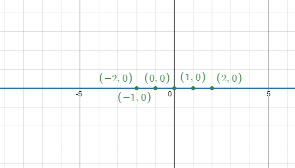
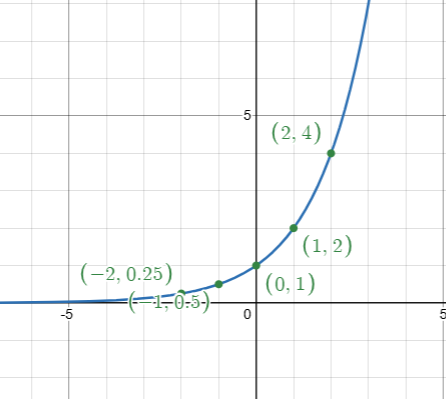
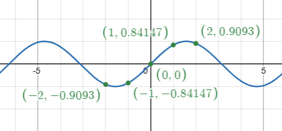

Tipos de Funções
Funções Constantes
Funções Constantes são um caso especial de função, no qual, o x não aparece
Por exemplo: 'ƒ(x) = c'
| X | Y |
|---|---|
| -2 | 0 |
| -1 | 0 |
| 0 | 0 |
| 1 | 0 |
| 2 | 0 |

Funções Polinomiais
Funções Polinomiais são as funções mais básicas, no qual, o x está elevado a algum expoente (polinômio)
Por exemplo: 'ƒ(x) = ax² + bx + c'
| X | Y |
|---|---|
| -2 | 3 |
| -1 | 2 |
| 0 | 3 |
| 1 | 6 |
| 2 | 15 |

Funções não Polinomiais
Funções não Polinomiais são as funções que não têm um polinômio, mas ainda têm x
Por exemplo: 'ƒ(x) = b · aˣ + c'
| X | Y |
|---|---|
| -2 | 0.25 |
| -1 | 0.5 |
| 0 | 1 |
| 1 | 2 |
| 2 | 4 |

Funções Trigonométricas
Funções Trigonométricas são as funções em relação ao Triângulo Trigonométrico
Por exemplo:
- ƒ(x) = sen(x)
- ƒ(x) = cos(x)
- ƒ(x) = tan(x)
| X | Y |
|---|---|
| -2 | -0.91 |
| -1 | -0.84 |
| 0 | 0 |
| 1 | 0.84 |
| 2 | 0.91 |

Galeria
Tudo sobre Funções
Vídeo Explicativo
Referências
- Gráficos gerados com Desmos Graphing Calculator
- Logo: Matemática Função Símbolo — Vecteezy . Criador: 108900997626762168909/Vecteezy.
- Vídeo: Funções Matemáticas — YouTube
- BRASIL. Ministério da Educação. Base Nacional Comum Curricular (BNCC) — Matemática e suas Tecnologias, Ensino Médio. Habilidades EM13MAT302 e EM13MAT304 . p. 528 (livro) / p. 104 (PDF). Disponível em: basenacionalcomum.mec.gov.br . Acesso em: maio de 2026.